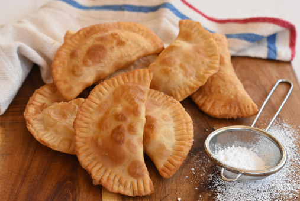

Empanadas

An empanada is a stuffed bread or pastry baked or fried in many countries of
Latin America and the south of Europe. The name comes from the verb empanar,
meaning to wrap or coat in bread. Empanada is made by folding a dough or bread
patty around the stuffing. The stuffing can consist of a variety of meats,
vegetables, or even fruits.
Let’s start with the simplest, and probably the most popular. These are easy
to find – especially after school hours when vendors are frying them up on the
streets for students.
In English, the name means ‘wind empanadas’. This is because they seem hollow
when you tear them open, but really they are cheese empanadas. The shell is
made from normal wheat flour, and cheese is sometimes incorporated with it.
Other versions will have a dollop of salty cheese hiding in the corners. They
are basically a fried cheesy bread. It’s a really delicious snack, but I
wouldn’t eat one for a meal. Ecuadorians will sometimes have them for
breakfast along with a hot cup of morocho, a white maize drink.
Ingredients:
-
15 medium discs or 25 small discs for fried empanadas - you can use this
recipe or frozen discs from the supermarket
-
2 ½ cups of shredded or grated quesillo cheese you can use mozzarella,
monterrey jack, Oaxaca cheese or any cheese that is good for melting, or a
mixture of cheeses according to your taste.
- ½ cup sugar for sprinkling
- Oil for frying
- Chopped white onion
Steps:
- Mix the quesillo and the white onion.
-
Place a spoonful of the above mixture in the center of each lid or disk
-
Fold the tops and seal the edges by pressing gently with your fingers, then
use a fork to seal the edges, then use your fingers to twist and fold the
outside of the edge, and finally use the fork again to finish sealing.
- Refrigerate the empanadas for at least one hour to seal properly.
-
Heat the oil in a frying pan or in an electric fryer, if you are frying the
empanadas in a frying pan be sure to add enough oil to cover at least half
of the empanada.
-
When the oil is very hot add the empanadas and fry them until they are
completely golden brown, approximately one minute per side (in the frying
pan you have to turn them while in the deep fryer it is not necessary).
- Place the empanadas on paper towels to absorb the grease.
- Sprinkle the empanadas with sugar and serve immediately.